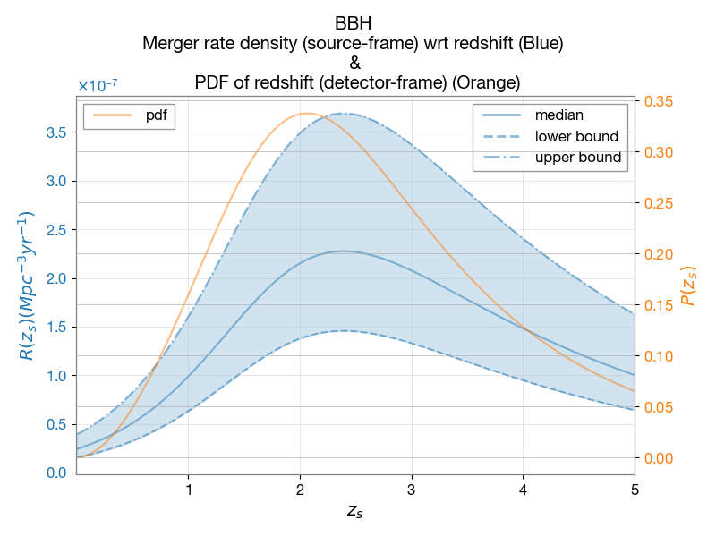
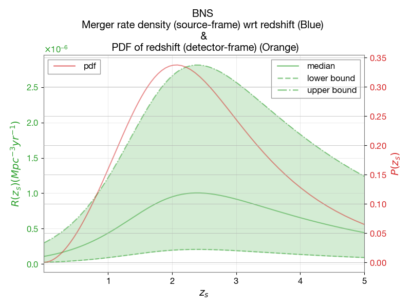

Gravitational wave event rates
This document outlines the default settings for calculating detectable gravitational wave event rates (per year) in ler.
Refer to documentation page on Analytical formulation for the detailed derivation of the rate equation.
Parameters Considered:
\(z_s\): Source redshift.
\(\theta\): Gravitational wave source properties. \(m_1\) (mass of the heavier one), \(m_2\) (mass of the lighter one), \(D_l\) (luminosity distance), \(\iota\) (inclination-angle), \(\phi\) (phase-of-coalescence), \(\psi\) (polarization-angle), \(ra\) (right-ascension), \(dec\) (declination), \(t\) (time-of-coalescence).
\(\rho(z_s,\theta)\): Network optimal SNR.
\(\rho_{th}\): SNR threshold.
\(R(z_s)\): Intrinsic merger-rate density distribution wrt redshift (source frame).
\(\mathcal{N}^U\): Normalizing factor.
\(P\): Prior distribution.
\(\Theta\): Detectability condition.
Default cosmology: LambdaCDM(H0=70, Om0=0.3, Ode0=0.7, Tcmb0=0.0, Neff=3.04, m_nu=None, Ob0=0.0). But, it can be changed by the user at ler initialization.
Annual Rate of Detectable Gravitational Wave Events
The rate, denoted as \(R_U\), quantifies the expected number of gravitational wave events that can be observed by detectors within a year. The expression for \(R_U\) is given by:
\begin{equation} R_U = \mathcal{N}^U\int P(z_s)\left\{\Theta[\rho(z_s,\theta)-\rho_{th}] P(\theta) d\theta \right\} dz_s \tag{2} \end{equation}
Key aspects of this equation include:
SNR Operator, \(\mathbf{\Theta[\rho(z_s,\theta)-\rho_{th}]}\): This is a step function that determines whether the signal-to-noise ratio (SNR) \(\rho(z_s,\theta)\) of an event exceeds the threshold SNR \(\rho_{th}\). If \(\rho(z_s,\theta) \geq \rho_{th}\), the event is considered detectable.
The SNR threshold \(\mathbf{\rho_{th}}\) is typically chosen based on the sensitivity and design specifications of the gravitational wave detector. This strategy is valid as a proxy in the Gaussian noise regime.
Prior Distribution, \(\mathbf{P(\theta)}\): This normalized distribution represents the prior knowledge or assumptions about the distribution of gravitational wave parameters \(\theta\).
Normalized redshift distribution, \(\mathbf{P(z_s)}\): This represents the probability distribution of the source redshift \(z_s\), as discussed in the previous section.
Gravitational Wave Parameters, \(\mathbf{\theta}\): The set of parameters includes the masses of the binary components (\(m_1\) and \(m_2\)), the inclination angle (\(\iota\)), the polarization angle (\(\psi\)), the right ascension (\(ra\)), the declination (\(dec\)), the phase of coalescence (\(\phi_c\)), and the time of coalescence (\(t_c\)).
The integration over \(z_s\) and \(\theta\) in the equation accounts for the contributions from all detectable events across different redshifts and with varying gravitational wave parameters. This comprehensive approach enables the estimation of the annual rate of detectable gravitational wave events, which is crucial for understanding the observational capabilities of gravitational wave detectors and planning future observational strategies.
Note: Refer to the GWSNR package documentation for details on the calculation of the optimal signal-to-noise ratio (SNR).
Related parameter distributions and their dependencies are described in the following sections
Compact Binaries Merger Rate Density
The merger rate density is a crucial parameter for understanding the population of compact binary mergers, including binary black holes (BBH), binary neutron stars (BNS), and neutron star-black hole (NSBH) systems. It quantifies the number of mergers occurring per unit volume per unit time. The merger rate density is typically expressed in units of \(\text{Gpc}^{-3} \text{yr}^{-1}\) or \(\text{Mpc}^{-3} \text{yr}^{-1}\) and varies with redshift (\(z\)).
For available models for merger rate density, see the example section.
Merger Rate Density Formula
The default merger rate density in ler follows the model presented in WIERDA et al. 2021. This model is a functional fit to the population I/II star merger-rate density, normalized to the local merger rate density. It extends from the M10 model to the Belczynski et al. (2017) model, which incorporates the metallicity dependence of the star formation rate, influenced by pair-instability supernova (PSN) and pair-instability pulsation supernova (PPSN) effects.
The merger rate density in the source frame is given by:
\begin{equation} \mathcal{R}(z_s) = \frac{\mathcal{R}_O(b_4+1)e^{b_2 z_s}}{b_4+e^{b_3 z_s}} \text{Gpc}^{-3}\text{yr}^{-1} \tag{1} \end{equation}
Where \(z_s\) is the redshift of the source.
The local merger rate \(\mathcal{R}_O\) and fitting parameters \(b_2\), \(b_3\), and \(b_4\) are specific to each model.
The following table provides the local merger rate \(\mathcal{R}_O\) for different compact binary models (refer to GWTC-3 IV A):
Model |
\(\mathcal{R}_O\) (\(\text{Gpc}^{-3} \text{yr}^{-1}\)) |
|---|---|
BNS |
\(105.5^{+190.2}_{-83.9}\) |
BBH |
\(23.9^{+14.9}_{-8.6}\) |
NSBH |
\(45^{+75}_{-33}\) |
Note: The merger rate density models and parameters are subject to updates based on new observational data and theoretical developments.
Normalized redshift distribution
Let the un-normalized redshift distribution given by,
\begin{equation} P_{\text{unorm}}(z_s) = \frac{\mathcal{R}(z_s)}{(1+z_s)} \frac{dV_c}{dz_s} \tag{2} \end{equation}
where \(dV_c/dz_s\) is the differential comoving volume element and \(\frac{1}{1+z_s}\) is the time dilation factor.
The normalizing factor \(\mathcal{N}^U\) can be calculated as,
\begin{equation} \mathcal{N}^U = \int_{z_{\text{min}}}^{z_{\text{max}}} P_{\text{unorm}}(z_s) dz_s = \int_{z_{\text{min}}}^{z_{\text{max}}} \frac{\mathcal{R}(z_s)}{(1+z_s)} \frac{dV_c}{dz_s} dz_s \tag{3} \end{equation}
where \(z_{\text{min}}\) and \(z_{\text{max}}\) are the minimum and maximum redshifts considered for the calculation. Now we can write the normalized redshift distribution as,
\begin{equation} P(z_s) = \frac{P_{\text{unorm}}(z_s)}{\mathcal{N}^U} \tag{4} \end{equation}
\(P(z_s)\) is the probability distribution of the source redshift \(z_s\). It is shown below for BBH events along with the merger rate density (source frame).


Compact binaries mass distribution
BBH Mass Distribution: PowerLaw+Peak Model
The PowerLaw+Peak model is a parametric model used to describe the mass distribution of binary black hole (BBH) mergers. It combines a power-law component with a Gaussian peak to capture both the broad distribution and potential local enhancements in the mass spectrum of BBHs. The model is defined by the following parameters:
\(m_{\text{minbh}}\): Minimum black hole mass in the distribution.
\(m_{\text{maxbh}}\): Maximum black hole mass in the distribution.
\(\alpha\): Slope of the power-law component.
\(\mu_g\): Mean of the Gaussian peak.
\(\sigma_g\): Standard deviation of the Gaussian peak.
\(\lambda_{\text{peak}}\): Fractional contribution of the Gaussian peak to the overall distribution.
\(\delta_m\): Smoothing parameter for the transition between the power-law and Gaussian components.
\(\beta\): Exponent for the mass ratio distribution.
For analytical expressions and details on the PowerLaw+Peak model, refer to the GWTC-2 2021 (Appendix B3). The default values for the parameters are based on GWTC-3 2021 (page-23). ler uses this model through gwcosmo.
Here is the default parameters and resultant distribution:
|
|

BNS mass distribution: Bimodal Gaussian Model
The mass distribution of neutron stars in binary neutron star (BNS) systems can be characterized by a bimodal distribution, which can be modeled using a double Gaussian distribution. This bimodal distribution is considered to reflect the different evolutionary paths that neutron stars can take. For more details, refer to Alsing et al. 2018 and M. Farr et al. 2020.
The probability density function for the neutron star mass, \(m\), is given by:
\begin{equation} p(m) = wN (\mu_L, \sigma_L) + (1 − w)N (\mu_R, \sigma_R) \end{equation}
where: - \(w\): Fraction of neutron stars in the low-mass peak. - \(\mu_L\) and \(\mu_R\): Mean masses of the low-mass and high-mass peaks, respectively. - \(\sigma_L\) and \(\sigma_R\): Standard deviations of the low-mass and high-mass peaks, respectively.
Neutron stars that form from the collapse of massive stars in binary systems can either remain isolated or undergo mass transfer from their companion stars. Neutron stars that remain isolated typically have a lower mass distribution, with a peak at around 1.35 \(M_{\odot}\). On the other hand, neutron stars that undergo mass transfer from their companion stars can have a higher mass distribution, with a peak at around 1.8 \(M_{\odot}\).
Here is the default parameters and resultant distribution:
|
|

Each normal distribution is independently truncated and normalized in the range [1, 2.3] \(M_{\odot}\), ensuring that the neutron star masses are within the physically plausible range.
This model has been found to be a good fit for the observed mass distribution of neutron stars in binary systems.
Note: Both primary and secondary masses are sampled from the same distribution. However, if the secondary mass is greater than the primary mass, their values are exchanged to maintain the convention that the primary mass is the larger of the two.
Sampling Methods for Compact Binary Sources
The following table summarizes the sampling methods and ranges for various parameters of gravitational waves from BBHs:
Parameter |
Unit |
Sampling Method |
Range |
|---|---|---|---|
\(z_s\) |
None |
Merger rate \(R_o^U(z_s)\) |
[0, 10] |
\(m_1, m_2\) |
\(\mathcal{M}_{\odot}\) |
PowerLaw+Peak model |
[\(m_{\text{min}}\), \(m_{\text{max}}\)] |
\(ra\) |
Radian |
Uniform |
[0, \(2\pi\)] |
\(dec\) |
Radian |
Cosine |
[\(-\pi/2\), \(\pi/2\)] |
\(\iota\) |
Radian |
Sine |
[0, \(\pi\)] |
\(\psi\) |
Radian |
Uniform |
[0, \(\pi\)] |
\(\phi_c\) |
Radian |
Uniform |
[0, \(2\pi\)] |
\(t_c\) |
Second |
Uniform (one year) |
[\(t_{\text{min}}\), \(t_{\text{max}}\)] |
ler by default consider non-spinning sources. However, spin parameters can be included in ler initialization as given in the example. Below is the default sampling method for the related parameters.
Case I: Aligned-spins sources (\(a_1,\,a_2\): Dimensionless spin parameter for the more and less massive object respectively.)
Parameter |
Unit |
Sampling Method |
Range |
|---|---|---|---|
\(a_1, a_2\) |
None |
Uniform |
[-0.8, 0.8] |
Case II: Precessing sources (\(a_1,\,a_2\): Dimensionless spin parameter for the more and less massive object respectively; \(\theta_1,\,\theta_2\): Tilt angle of the spin with respect to the orbital angular momentum; \(\phi_{12}\): Azimuthal angle between the spins; \(\phi_{jl}\): Azimuthal angle between the total angular momentum and the orbital angular momentum.)
Parameter |
Unit |
Sampling Method |
Range |
|---|---|---|---|
\(a_1, a_2\) |
None |
Uniform |
[0.0, 0.8] |
\(\theta_1, \theta_2\) |
Radian |
Sine |
[0, \(\pi\)] |
\(\phi_{12}, \phi_{jl}\) |
Radian |
Uniform |
[0, \(2\pi\)] |
Statistical Form of Detectable Merger Rate (Monte Carlo Integration)
The detectable merger rate, \(R_U\), can be statistically estimated using Monte Carlo integration. This can be done using either a step function or the probability of detection (\(P_{\text{det}}\)).
With Step Function:
\begin{equation} \begin{split} R_U &= \mathcal{N}^U \left< \Theta[\rho(z_s,\theta)-\rho_{th}]\right>_{z_s,\theta \in \text{Sampled}[z_s,\theta]} \\ &= \frac{\mathcal{N}^U}{N} \sum_i \Theta[\rho(z_s^i,\theta_i)-\rho_{th}] \end{split} \tag{6} \end{equation}
With :math:`P_{text{det}}`:
\begin{equation} \begin{split} R_U &= \mathcal{N}^U \left< P_{\text{det}}(z_s,\theta)\right>_{z_s,\theta \in \text{Sampled}[z_s,\theta]} \\ &= \frac{\mathcal{N}^U}{N} \sum_i P_{\text{det}}(z_s^i,\theta_i) \end{split} \tag{7} \end{equation}
In both cases, the average is taken over a sample of \((z_s, \theta)\), where \(N\) is the total number of samples. The step function \(\Theta[\rho(z_s,\theta)-\rho_{th}]\) evaluates to 1 if the SNR \(\rho(z_s,\theta)\) is above the threshold \(\rho_{th}\), and 0 otherwise. The probability of detection, \(P_{\text{det}}(z_s,\theta)\), provides a smoother transition from detectable to non-detectable events at the SNR threshold.
The table below presents the merger rate values for two different detector configurations, considering spin-less systems for simplicity. The signal-to-noise ratio (SNR) operator is implemented using a step function with a threshold of 8, and the waveform approximant used is IMRPhenomD.
Detector Configuration |
BBH (popI-II) Merger Rate (yr-1) |
BNS Merger Rate (yr-1) |
Ratio BBH:BNS |
|---|---|---|---|
[L1, H1, V1] (O4) |
440.9 |
3.2 |
137.8 |
[CE, ET] (3G) |
91942.8 |
38810.4 |
2.4 |